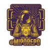
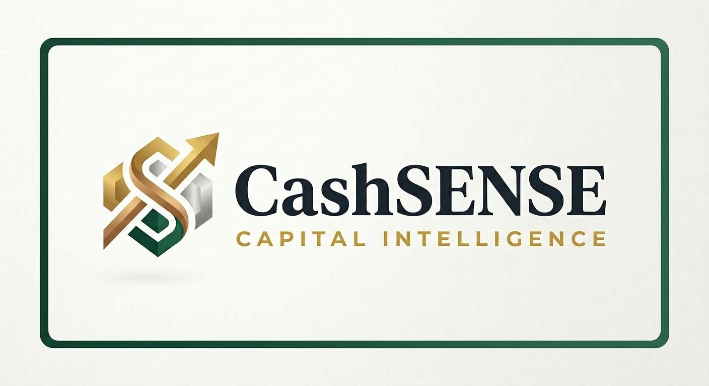

Secure Architecture. Scalable Execution.
I am deepening my expertise in modern, automation-driven environments, building a strong foundation in DevOps and AI-assisted software development. I combine strategic thinking with continuous technical growth — human vision leads and AI supports. My long-term direction is DevSecOps, developed step by step through practical experience and continuous learning.
My 20+ years of business experience gave me a strong understanding of how organizations operate and how decisions are made. I bring that perspective into ICT, where understanding real business needs is as important as technical skills.
DevOps is the first direction I am pursuing in my professional journey. I work with container-based solutions such as Docker and automated CI/CD pipelines, building stable and maintainable environments where code moves reliably from development to production.
This foundation supports my long-term path toward DevSecOps, combining security, automation and scalability.
AI is changing software development into a collaboration where humans provide direction and context, while AI accelerates problem-solving and reduces routine work.
I am developing my skills in AI-assisted and agentic development, exploring how AI agents can support and build complete software features within human-defined goals and constraints.
My future direction is to combine AI with strong DevOps practices. I aim to develop toward DevSecOps and build secure, resilient and future-ready systems.
My goal is to integrate security, automation and AI throughout the software development lifecycle.
I am building my technical capabilities through a clear and goal-driven development roadmap. My plan focuses on mastering modern development environments: Linux fundamentals, container technologies, version-controlled workflows and automated pipelines.
Building on these foundations, I am developing my capabilities in AI, AI-assisted and agentic software development, with a focus on effective human–AI collaboration throughout the software development lifecycle. At the same time, I am strengthening my security-first mindset through DevSecOps principles, with a commitment to practical development and continuous improvement.
Explore My Technical Growth Plan — The Director’s WayThe Code Bootcamp organized by Saranen Consulting provided me with a broad foundation in modern software development and prepared me for further studies in the field.
Key Areas of Study
During this Open UAS study path, I strengthened my foundation in software development, Linux‑based environments, GitLab version control, SQL and design‑oriented problem solving.
Key Areas of Study
Modern Software Development with AI — theory‑focused introduction centered on Scrum, Agile principles and secure software development frameworks.
Key Areas of Study
Over 20 years of experience in business, specializing in corporate insurance, risk management and B2B relationships. This has given me a practical understanding of how businesses operate, manage risks and make decisions.
I worked as an IT Support Specialist in the ICT department of the City of Varkaus. This role provided hands‑on experience in IT support, system administration and infrastructure management.
As part of my JAMK studies, I worked as a DevOps Intern on a course-based PrestaShop project in a six-person Scrum team. I was responsible for DevOps and cloud infrastructure, including dev/prod environments, VMs and CI/CD pipelines.
